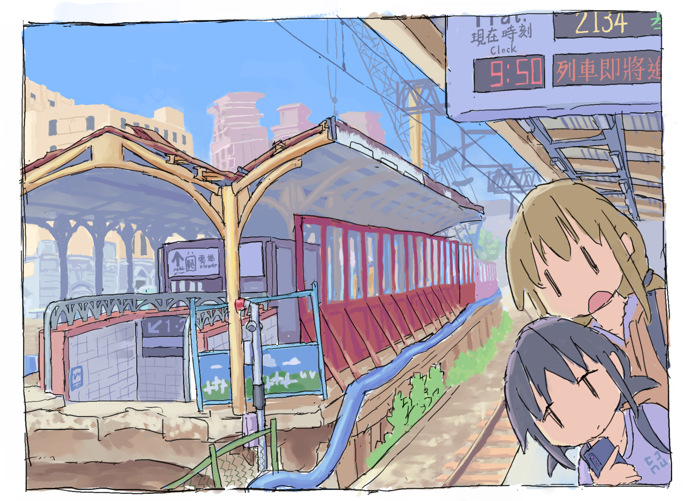

本站為NorwegianIron管理之個人網頁，主要是為放置各式平台網站的連結而設立之，設計上稍嫌陽春還請見諒。

作者從他可笑的生活以及網癮發作的經歷取材，並以漫畫形式繪製出的各式小劇場。希望每篇荒謬的情節能使各位發笑。
這東西的發想從2024年初便開始了，經過一段建設時期才提出來見人。「卷飯鎮區公所」一名也是出自其中。
請收視我的Silliotic
建立於Blogger上的網頁，可在此瀏覽我個人的圖畫作品，亦設具有雜記功能之貼文區。
若手上能看的作品的話基本上都會發布於該處，至於雜記的部分我覺得恐怕會變成一堆歌曲的分享區。